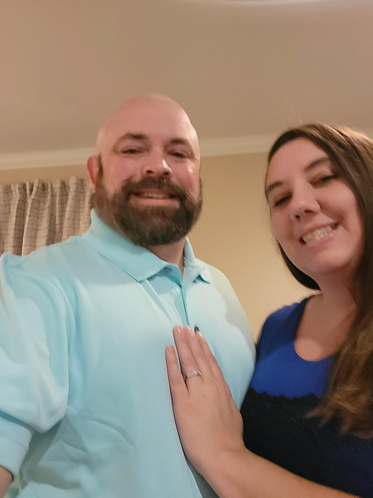

Jeffery Cox
Owner & Operator
With years of experience maintaining lawns across South Carolina, Jeffery Cox founded Grass Busters to bring a higher standard of care to the Orangeburg community. Unlike the big corporate crews, Jeffery is an owner-operator who believes in being hands-on for every single cut, trim, and cleanup.
When you call Grass Busters, you aren't just getting a service; you're getting a commitment to quality. Jeffery's philosophy is simple: Treat every lawn like it’s his own front yard.
Our Foundation
As a family-owned, Christian business, we operate on the principles of stewardship and integrity. We believe that hard work is a form of service, and we strive to reflect those values in every lawn we touch and every neighbor we serve.
The Grass Busters Promise
Reliability
We show up when we say we will. No missed appointments, no excuses.
Precision
From the first pass of the mower to the final blow of the debris, we focus on the details.
Locally Owned
Proudly serving Orangeburg, SC 29115. We know the local grass types and how to treat them.